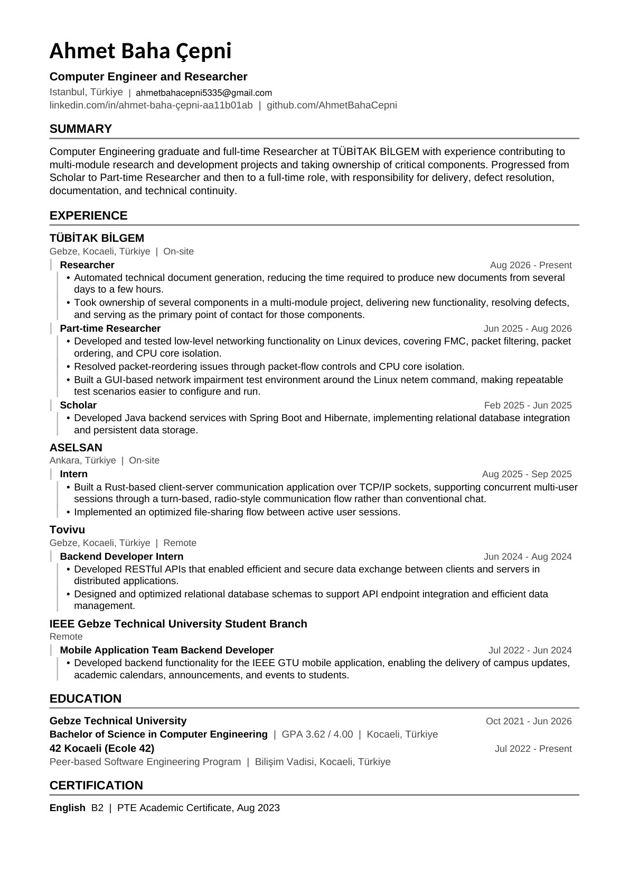

A little about me
Hi, I’m Ahmet.
I’m a low-level network engineer drawn to the parts of software that most people never see — and to making them work clearly and reliably.

How I think about building
Good engineering begins with understanding what happens underneath. I like tracing a problem through its moving parts, finding the real constraint, and designing a solution that is straightforward to use and maintain.
That curiosity has taken me from command-line tools and networked applications to graphics and small games. Each project is a different way to learn a system by building one.
The areas I keep coming back to
Networking, systems programming, process behavior, and thoughtful interfaces. I enjoy the moment when a complex implementation becomes something simple and dependable for the person using it.
Explore my projectsCurriculum vitae
Full backgroundRead my education and professional experience here, or open the PDF in a separate tab. The public copy omits my phone number.
